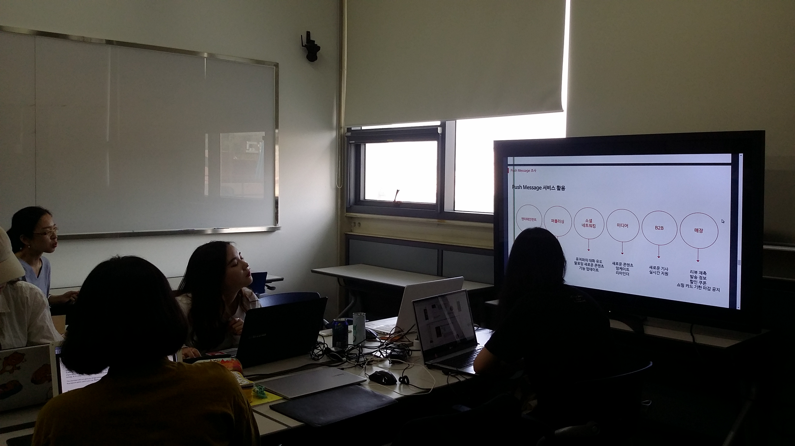

캡스톤 디자인 주간 보고서 [3주차]
| 팀 명 | 11팀 |
|---|---|
| 과제명 | 알바천국 감성 푸쉬 서비스 기획 |
| 회의날짜 | 2016년 9월 13일 ( 09:00 ) ~ 2016년 9월 13일 ( 13:00 ) |
| 참석자 | 성명 | 역할 | 서명 |
|---|---|---|---|
| 안가은 | 회의록 작성, 팀장 | ||
| 김윤신 | 기획 | ||
| 박채원 | 기획 | ||
| 조영지 | 기획 |
| 주간 보고 내용(한주의 내용을 간단하게 정리) |
|---|
|
한 주동안 사용자를 그룹핑하여 각 사용자 그룹의 특징 및 니즈를 조사하였습니다. 알바천국의 사용자를 크게 구직형과 구인형으로 나눈 후, 연령대별, 직업별 등이 다양한 구체적인 페르소나를 설정하였습니다. 또한 푸시 알림의 분류와 좋은 푸시 알림의 특징, 서비스 방법 등 푸시 알림에 대하여 더 자세히 조사하고, 푸시 알림의 사례들을 조사하였습니다. 이후 조사한 내용을 바탕으로 프레젠테이션 발표를 진행하였습니다.  발표 후 장윤제 교수님께 피드백을 받고 구체화한 사용자들을 유형별로 분류하고 재정렬하였으며, 푸시 알림의 사례 조사 결과 또한 푸시 알림의 전달 방식에 따라 분류하고 재정렬하였습니다. |
| 다음 진행 방향 및 계획 |
|---|
|
2주차의 설문조사 결과를 얻고 결과를 그래프로 나타낸다. 설문조사에서 사용자과 원하는 푸시 알림을 찾아낸다. |
* 주차별 주간 보고서를 필히 제출